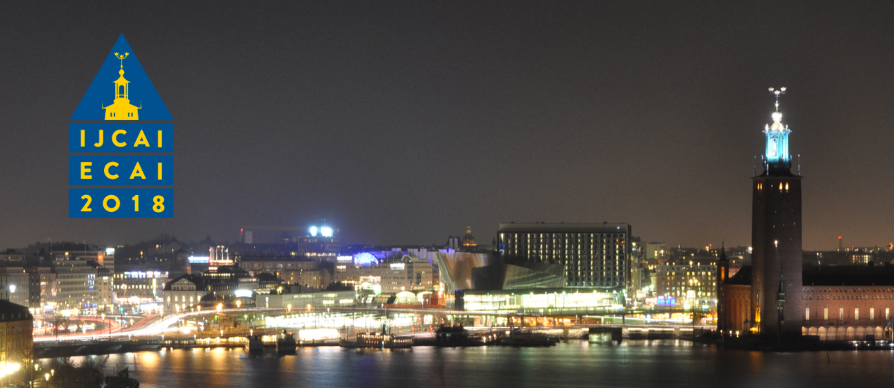

通信工程系2015级硕士研究生蔡淑莲作为第一作者，在曾德炉副教授（通讯作者）和丁兴号教授（团队负责人）的指导下，发表题为“MEnet: A Metric Expression Network for Salient Object Segmentation”的论文。
已有的显著性目标分割模型虽然在公开数据集上均已取得了较优的性能，但是大多数模型都存显著性目标分割边缘不清晰以及鲁棒性不足问题，如对噪声和压缩伪影敏感等。针对上述不足，论文提出了一种基于深度度量学习的显著性目标分割算法。基于显著性分割全局性的考虑，文中利用编码-解码器深度网络结构提取图像的低、中、高层特征，并构建融合网络将多种特征融合，再利用网络函数逼近方式重新刻画了语义级的拓扑度量空间。该论文中所有的特征提取方式都是基于像素级，使得生成的显著性目标分割结果图的边缘更加精细，且对噪声和压缩伪影等具有更强的鲁棒性。
注:国际人工智能联合会议（International Joint Conference on Artificial Intelligence, 简称为IJCAI）是人工智能领域中最主要的学术会议之一。IJCAI始于1969年，最初每2年举行一次，从2015年开始改为每年一次，是人工智能领域的顶级学术会议，被中国计算机学会推荐国际学术会议列表认定为A类会议。IJCAI-ECAI 2018将于2018年8月在瑞典的斯德哥尔摩举行。